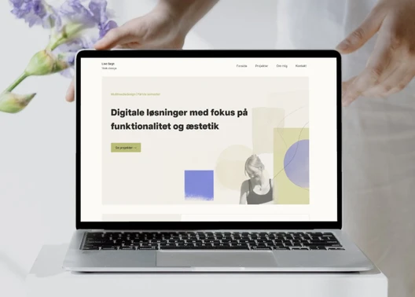
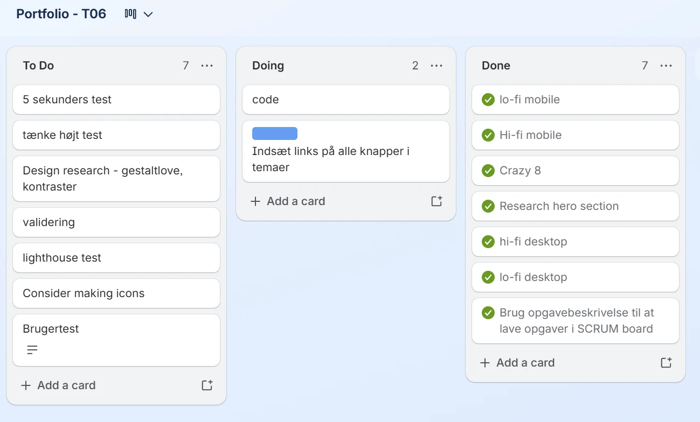
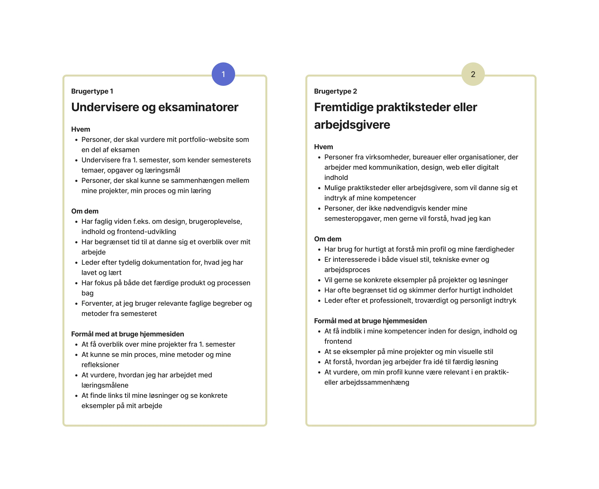
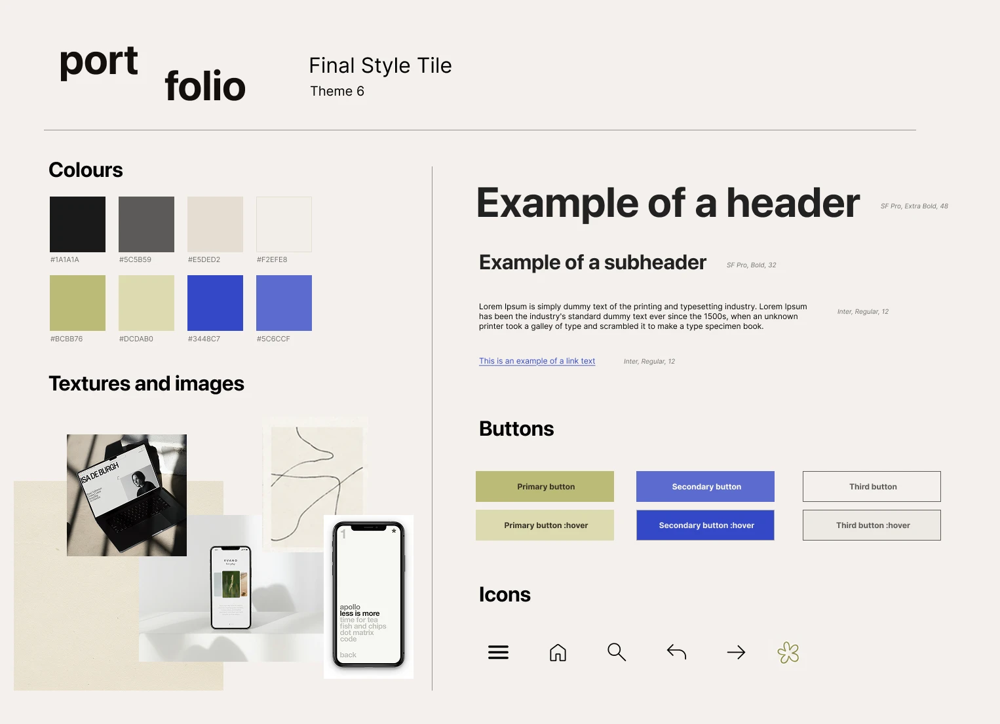
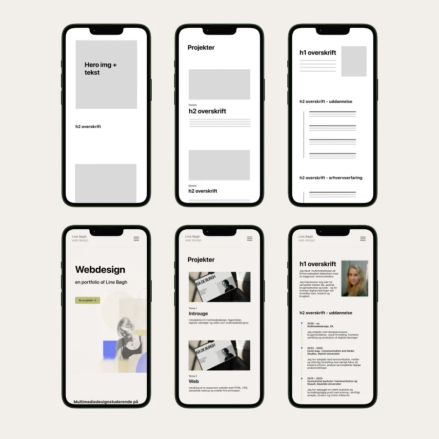
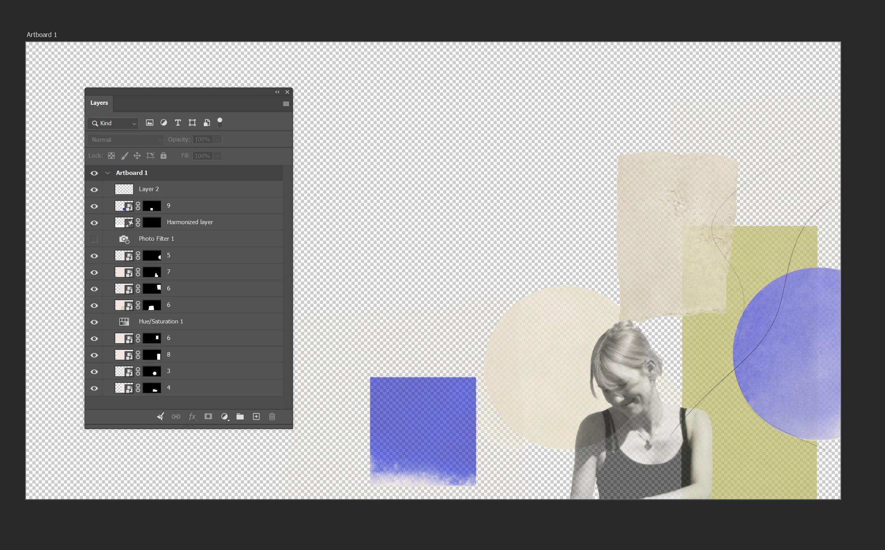
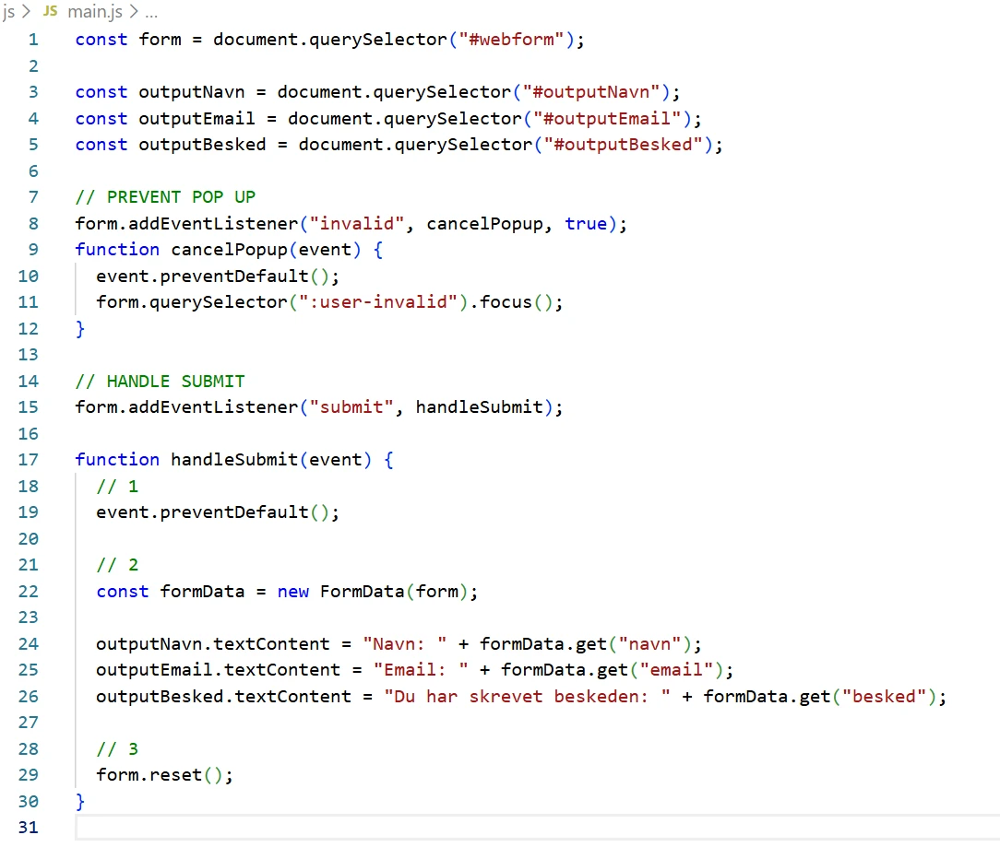
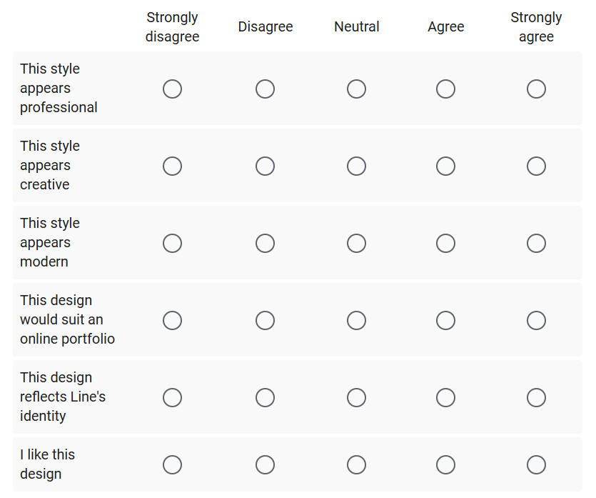

Tema 6
Portfolio
I tema 6 udviklede jeg dette portfolio-website som afsluttende eksamensprojekt for 1. semester. Portfolioet samler mine projekter, processer og refleksioner fra semesteret og viser, hvordan jeg har arbejdet med design, kode, brugerforståelse, indhold og digital formidling.

Projektet: Mit portfolio-website
Formålet med portfolioet er at skabe et brugervenligt og professionelt website, hvor mine undervisere og eksaminatorer hurtigt kan få overblik over, hvem jeg er, hvad jeg har arbejdet med på 1. semester, og hvad jeg har lært undervejs.
Samtidig har jeg ønsket, at portfolioet også skulle afspejle mig som afsender. Jeg er interesseret i æstetik, branding, kreativ udvikling og kode, og derfor har jeg arbejdet med et visuelt udtryk, der både er enkelt, personligt og funktionelt.
Proces
Herunder kan processen foldes ud i mindre dele. Den viser, hvordan jeg har arbejdet fra målgruppe og struktur til visuelt koncept, indhold, kodning, test og færdigt portfolio-site.
Proces og projektstyring
For at strukturere arbejdet med projektet, oprettede jeg et Trello board. Det benyttede jeg til at skabe overblik over de forskellige opgaver og det hjalp mig med at strukturere mit arbejde.
Dertil brugte jeg FigJam til at dokumentere arbejdet undervejs, samt Figma Design til at udvikle wireframes og prototyper.
Jeg havde også stort fokus på at lave en optimal mappestruktur, særligt i forbindelse med kodning og når jeg gemte billeder.

Målgruppe og formål
Før jeg udviklede sitet, vurderede jeg målgruppen. Dertil udarbejdede jeg brugertyper, user stories og potentielle brugerrejser.
Den primære målgruppe for portfolioet er mine undervisere og eksaminatorer. De skal hurtigt kunne danne sig et overblik over, hvem jeg er, hvilke projekter jeg har arbejdet med på 1. semester, og hvad jeg har lært.
Som sekundær målgruppe har jeg tænkt på fremtidige praktiksteder eller andre fagligt interesserede, som skal kunne få indblik i mine kompetencer, min proces og min måde at arbejde på.
Derfor har jeg haft fokus på overskuelighed, tydelig navigation og en fast struktur. Hvert tema præsenteres med opgave, proces, løsning og refleksion, så brugeren nemt kan sammenligne projekterne og følge min faglige udvikling.

Visuelt koncept og designretning
Jeg ønskede, at portfolioet skulle være brugervenligt, men samtidig afspejle min personlighed. Jeg er både kreativ, interesseret i æstetik og branding og motiveret af at kode, og derfor har jeg arbejdet med et udtryk, der kombinerer det funktionelle med det visuelle.
I designprocessen arbejdede jeg med moodboards, styletiles og Likert-test. På baggrund af brugerindsigter udviklede jeg et endeligt styletile, som blev udgangspunkt for den visuelle retning på portfolioet.

Wireframes og prototyper
Efter arbejdet med den visuelle retning udviklede jeg lo-fi og hi-fi wireframes. Wireframes hjalp mig med at afklare sidernes struktur, placering af indhold, navigation og visuelle hierarki, før jeg begyndte at kode.
Jeg har struktureret sitet med en forside, en samlet projektside, individuelle sider for hvert tema, en om mig-side og en kontaktside. På den måde kan brugeren både få et hurtigt overblik og gå i dybden med de enkelte projekter.
Jeg har valgt at give hvert tema sin egen side for at skabe ro og undgå, at projektsiden bliver for teksttung. Navigationen er holdt enkel og genkendelig med links i headeren og en footer, der understøtter den samlede struktur.
Jeg har haft fokus på, at de vigtigste informationer skal ligge øverst på siderne. De mere detaljerede procesbeskrivelser placeres i accordions, så brugeren selv kan vælge, hvor meget de vil folde ud.

Layout og visuelt hierarki
Jeg har valgt at give hvert tema sin egen side for at skabe ro og undgå, at projektsiden bliver for teksttung. Navigationen er holdt enkel og genkendelig med links i headeren og en footer, der understøtter den samlede struktur.
Jeg har haft fokus på, at de vigtigste informationer skal ligge øverst på siderne. De mere detaljerede procesbeskrivelser placeres i accordions, så brugeren selv kan vælge, hvor meget de vil folde ud.
Accordions er valgt som en måde at balancere overblik og fordybelse. De vigtigste pointer står først, mens detaljer om proces, metoder og refleksion kan foldes ud efter behov.
Indhold og formidling
I arbejdet med indholdet har jeg forsøgt at samle semesterets læring på en måde, der er kort, præcis og overskuelig. Jeg har arbejdet med klare overskrifter, korte tekstafsnit, projektlinks, billeder, screenshots og procesmateriale.
Jeg har også tænkt over læsbarhed, blandt andet ved at begrænse bredden på tekstafsnit og opdele indholdet i mindre sektioner. Det skal gøre det lettere for brugeren at forstå både de færdige løsninger og processerne bag.
I forbindelse med udvikling af indhold, har jeg haft fokus på rettigheder og data. Jeg har kun anvendt mit eget materiale - for eksempel screenshots af mit eget arbejde eller tekst og billeder, jeg selv har udviklet.
Jeg har bl.a. udviklet visuelt materiale ved brug af Adobe Photoshop. Her har jeg arbejdet med at finde en balance, der illustrerer mit kreative interessefelt, men som ikke forstyrrer brugerens opmærksomhed, eller gør siden uoverskuelig.
Billederne er konverteret til webp-format, og billedernes størrelser er blevet overvejet, for at sikre at websitet indlæses hurtigt.

Kodning og teknisk udvikling
Portfolioet er kodet fra bunden med HTML, CSS og JavaScript. Jeg har arbejdet mobile-first og brugt media queries til at tilpasse layoutet til større skærme.
I CSS har jeg blandt andet brugt grids, flexbox og custom properties. Custom properties har især været nyttige til farver og visuelle gentagelser, fordi de gør designet mere ensartet og lettere at justere.
Jeg har lavet en kontaktformular, hvor jeg anvender JavaScript. Den tekniske udvikling har været en måde at vise, at jeg kan omsætte design og indhold til et responsivt og funktionelt website.

Test og justeringer
For at undersøge om portfolioet fungerer for målgruppen, har jeg arbejdet med brugertest og iterationer. Jeg anvendte likert-test til udarbejdelse af styletile samt tænke-højt-test og 5-sekunders-test undervejs. Testene havde fokus på, om brugeren hurtigt forstod sitets formål, kunne finde rundt og fik det ønskede indtryk af mig som afsender.
Feedbacken viste især, at tydelig navigation, korte tekster og et klart visuelt hierarki er vigtigt på et portfolio-site med meget indhold. Derfor har jeg justeret indhold, overskrifter og opbygning, så de vigtigste pointer bliver lettere at afkode.
Testarbejdet har hjulpet mig med at se portfolioet fra brugerens perspektiv og ikke kun fra min egen vinkel. Nedenfor er et billede fra Likert-testen.

Faglig udvikling gennem semesteret
Portfolioet viser min udvikling fra tema 1 til tema 6. I starten af semesteret blev jeg introduceret til uddannelsen, GitHub og de første digitale værktøjer. I tema 2 lærte jeg at bygge et website med HTML og CSS, og i tema 3 lærte jeg at arbejde mere metodisk med UX/UI, research, prototyper og brugertest.
I tema 4 blev jeg introduceret til JavaScript, SVG, Illustrator og mere avanceret brugergrænsefladeudvikling. I tema 5 arbejdede jeg med indholdsproduktion, redesign og samarbejde i en gruppe. I tema 6 samler jeg alle de erfaringer i ét selvstændigt website.
Det vigtigste, portfolioet viser, er derfor ikke kun de enkelte projekter, men min progression: Jeg er blevet mere sikker i kode, mere metodisk i min designproces og mere bevidst om, hvordan indhold, brugeroplevelse og visuelt udtryk skal hænge sammen.
Refleksion
Tema 6 har været en øvelse i at samle hele semesterets læring i ét samlet produkt. Portfolioet er ikke kun en præsentation af mine tidligere projekter, men også et projekt i sig selv, hvor jeg bruger de metoder, værktøjer og principper, jeg har arbejdet med gennem semesteret.
Den største udfordring har været at balancere ambitioner og tidsramme. Jeg havde mange idéer til både indhold, design og funktionalitet, men var nødt til at prioritere, så sitet blev overskueligt, færdigt og brugbart. Det har lært mig, at en god løsning ikke handler om at vise alt, men om at udvælge og formidle det vigtigste klart.
Jeg er mest tilfreds med, hvor meget jeg nåede, og hvordan portfolioet viser min faglige udvikling. Fra den første introduktion til GitHub og HTML/CSS til arbejdet med UX-metoder, JavaScript, indholdsproduktion og redesign kan jeg se en tydelig progression i både min tekniske forståelse og min måde at arbejde metodisk på.
09. Efterrefleksion
Hvad jeg tager med videre
Arbejdet med portfolioet har lært mig at prioritere. Jeg har skullet vælge, hvad der var vigtigst at vise, og hvordan det bedst kunne formidles til en konkret målgruppe. Det har været en øvelse i både design, kommunikation og teknisk udvikling.
Jeg er især tilfreds med, hvor meget jeg nåede, og at portfolioet både viser mine færdige løsninger og de processer, der ligger bag. Det gør sitet til en samlet præsentation af min læring, men også til et udgangspunkt, jeg kan bygge videre på frem mod praktik og fremtidige projekter.